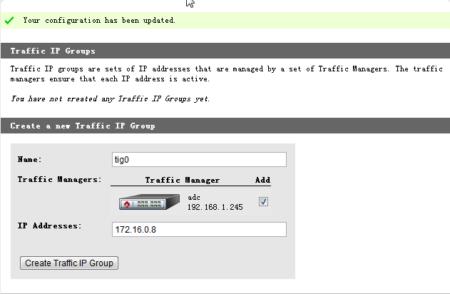
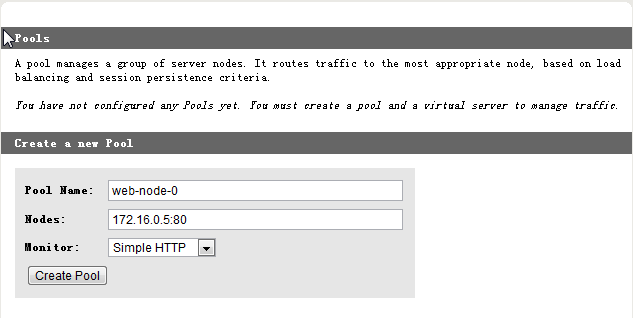
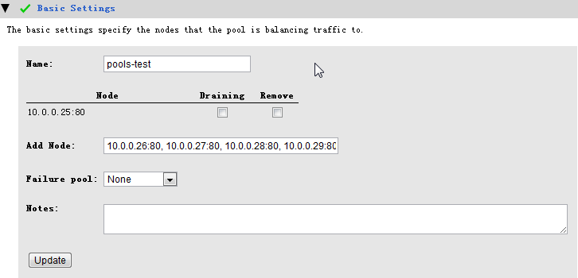
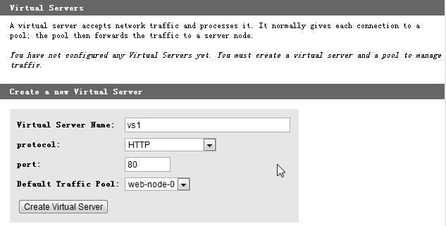
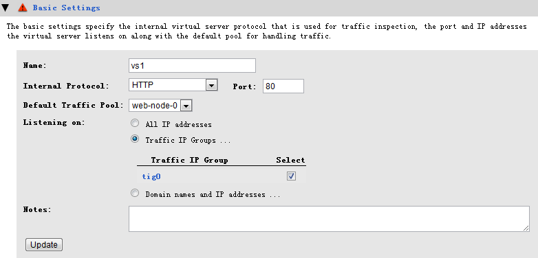
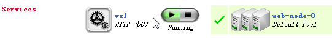

<?xml version="1.0" encoding="UTF-8" standalone="no"?>
 user.preroot <!DOCTYPE html PUBLIC "-//W3C//DTD XHTML 1.0 Transitional//EN" "http://www.w3.org/TR/xhtml1/DTD/xhtml1-transitional.dtd"><html xmlns="http://www.w3.org/1999/xhtml"><head><meta http-equiv="Content-Type" content="text/html; charset=UTF-8" /> user.head.title <link rel="stylesheet" type="text/css" href="../docbook.css" /><meta name="generator" content="DocBook XSL Stylesheets Vsnapshot" /><meta name="keywords" content="Cisco, H3C, Juniper, F5 BIG-IP, Array, Dell, IBM, HP, , " /><link rel="home" href="../index.html" title="Netkiller Network 手札" /><link rel="up" href="banggoo.html" title="第 37 章 Web UI" /><link rel="prev" href="banggoo.html" title="第 37 章 Web UI" /><link rel="next" href="centos.html" title="第 38 章 CentOS" /> user.head.content </head><body> user.header.navigation <div class="navheader"><table width="100%" summary="Navigation header"><tr><th colspan="3" align="center">Services</th></tr><tr><td width="20%" align="left"><a accesskey="p" href="banggoo.html">上一页</a> </td><th width="60%" align="center">第 37 章 Web UI</th><td width="20%" align="right"> <a accesskey="n" href="centos.html">下一页</a></td></tr></table><hr /></div> user.header.content <div class="section"><div class="titlepage"><div><div><h2 class="title" style="clear: both"><a id="services"></a>Services</h2></div></div></div><div class="section"><div class="titlepage"><div><div><h3 class="title"><a id="id1046"></a>Traffic IP Groups</h3></div></div></div><div><table border="0" summary="manufactured viewport for HTML img" style="cellpadding: 0; cellspacing: 0;" width="NaN"><tr><td></td></tr></table></div><p>Name:</p><p>IP Addresses:</p></div><div class="section"><div class="titlepage"><div><div><h3 class="title"><a id="id1048"></a>Pools</h3></div></div></div><div><table border="0" summary="manufactured viewport for HTML img" style="cellpadding: 0; cellspacing: 0;" width="NaN"><tr><td></td></tr></table></div><p>Your configuration has been updated.</p><div class="section"><div class="titlepage"><div><div><h4 class="title"><a id="id1047"></a>Edit</h4></div></div></div><div><table border="0" summary="manufactured viewport for HTML img" style="cellpadding: 0; cellspacing: 0;" width="NaN"><tr><td></td></tr></table></div></div></div><div class="section"><div class="titlepage"><div><div><h3 class="title"><a id="id1049"></a>Virtual Servers</h3></div></div></div><div><table border="0" summary="manufactured viewport for HTML img" style="cellpadding: 0; cellspacing: 0;" width="NaN"><tr><td></td></tr></table></div><p>Your configuration has been updated.</p><div><table border="0" summary="manufactured viewport for HTML img" style="cellpadding: 0; cellspacing: 0;" width="NaN"><tr><td></td></tr></table></div></div><div class="section"><div class="titlepage"><div><div><h3 class="title"><a id="id1050"></a>Status</h3></div></div></div><div><table border="0" summary="manufactured viewport for HTML img" style="cellpadding: 0; cellspacing: 0;" width="NaN"><tr><td></td></tr></table></div><p></p><div><table border="0" summary="manufactured viewport for HTML img" style="cellpadding: 0; cellspacing: 0;" width="NaN"><tr><td></td></tr></table></div></div></div> user.footer.content <div class="navfooter"><hr /><table width="100%" summary="Navigation footer"><tr><td width="40%" align="left"><a accesskey="p" href="banggoo.html">上一页</a> </td><td width="20%" align="center"><a accesskey="u" href="banggoo.html">上一级</a></td><td width="40%" align="right"> <a accesskey="n" href="centos.html">下一页</a></td></tr><tr><td width="40%" align="left" valign="top">第 37 章 Web UI </td><td width="20%" align="center"><a accesskey="h" href="../index.html">起始页</a></td><td width="40%" align="right" valign="top"> 第 38 章 CentOS</td></tr></table></div> user.footer.navigation </body></html>